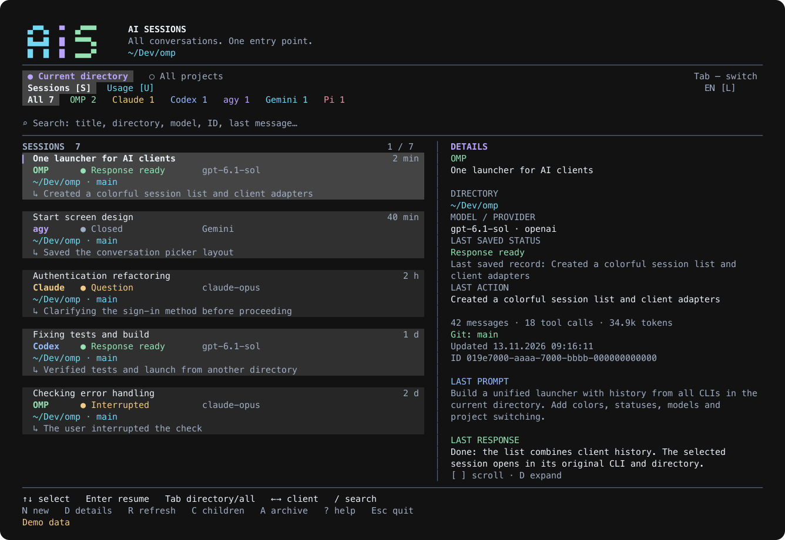
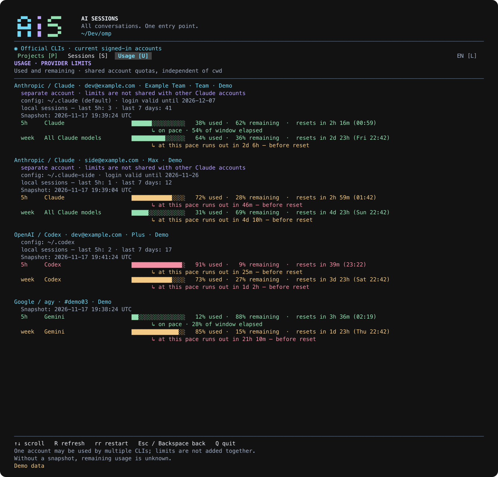

All conversations.
One entry point.
Two fast Rust companions for your AI coding CLIs: ais (native multi-pane desktop GUI) and ais-cli (lightweight terminal TUI). Browse every project, track 5h/week usage limits, and resume any session in one click or keystroke.
- Claude Code
- Codex
- Gemini CLI
- agy
- OMP
- Pi
Installs ais (CLI) and ais-gui (GUI) to ~/.local/bin with SHA-256 verification.
ais Desktop GUI
Native GPU-rendered workspace for macOS, Windows (ConPTY), and Linux. No Electron, no runtime.
- Up to 4 split terminal panes per project space (alacritty engine + kitty keys)
- Live agent pills (working / waiting / needs you / error) & desktop notifications
- Toggle any UI block on/off (Title bar, Sidebar, Toolbar, Agent pills, Headers, Status bar)
- Fullscreen terminal mode (⌘⇧↵ / Ctrl+Shift+↵) & OS window fullscreen
- Command palette (⌘P), 15 themes, file tree with @mention insertion, daily signed auto-updates
ais-cli Terminal CLI & TUI
Fast ~6 MB terminal browser and local session indexer. Ideal over SSH, in Warp, or headless.
- Flat project list or nested folder tree with pin, search, and client filters
- One-key resume in the session's original directory and client; returns on exit
- 5h & weekly limits per account with reset countdowns, pace forecast & DeepSeek balance
- Scriptable JSON output (
--json,--usage --json) poweringais - Daily Ed25519-signed self-updates (
ais-cli --update) on macOS, Linux, and Windows

Everything you said to an AI, one keystroke away
Read-only, local, fast. Neither ais nor ais-cli ever edits client history or sends your conversations anywhere.
Projects & panes
Browse projects as a flat list or tree in ais-cli, or open multiple folders as spaces with split terminal panes in the ais GUI.
Resume where it was
Launch or resume Claude, Codex, Gemini, agy, OMP or Pi in the session's own directory with one click or Enter.
Modular blocks & Zen
Switch Title bar, Sidebar, Toolbar, Agent pills, Pane headers, or Status bar on/off anytime — or jump into edge-to-edge Fullscreen terminal.
5h and weekly limits
Usage per account from the official CLIs — Claude, Codex, agy — with reset times and pace forecast. Plus DeepSeek balance.
Updates itself, safely
Both ais and ais-cli check an Ed25519-signed manifest once a day, verify SHA-256 checksums, and swap binaries atomically.
Cross-platform native
Pure Rust for macOS (Apple Silicon & Intel), Windows x64 (ConPTY), and Linux (X11 / Wayland / static musl). EN / RU / FR.
Know your limits before they hit
Press ⌘U in ais or U in ais-cli. Every signed-in account gets its own block: plan, config dirs, local activity, used and remaining for each window, reset time, and pace forecast.

Keys
ais (GUI) — ⌘ on macOS · Ctrl+ on Windows & Linux
ais-cli (Terminal TUI)
Downloads
Prefer a manual install? Grab any binary from the latest GitHub release, or build from source with Cargo.